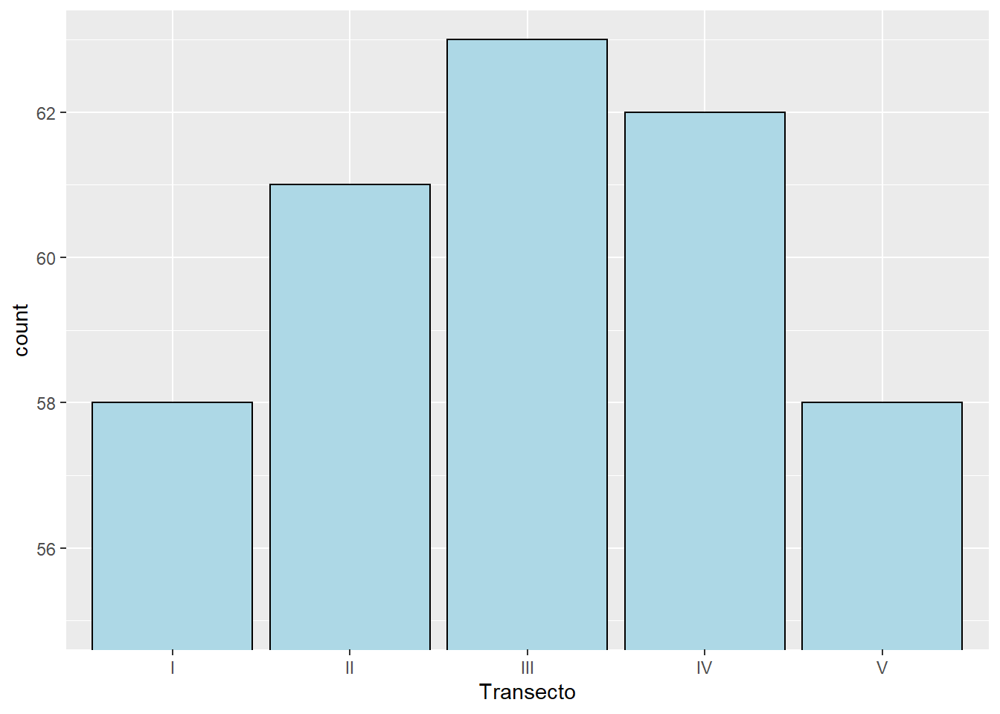

10 Análise Exploratória de Dados (AED)
A AED não é um processo com um conjunto de regras rígidas. Mais do que qualquer coisa, é uma estado de espírito. Durante as fazes iniciais de AED, devemos ser livres para investigar cada ideia que ocorra.
À medida que a exploração segue, nos direcionamos para algumas áreas particularmente produtivas que, por fim, deverão ser escritas e comunicadas.
É considera uma fase importante de qualquer análise, pois mesmo se as perguntas já foram formuladas, sempre será necessário pesquisar a qualidade dos dados que temos em mãos.
Assim, a limpeza de dados é apenas uma aplicação da AED, na qual serão necessárias as ferramentas de visualização, transformação e modelagem.
A AED é o cálculo das estatísticas tradicionais, alguns exemplos:
Univariadas: média, mediana, desvio padrão, 1º e 3º quartis, mínimo, máximo, coeficientes die variação, de assimetria e curtosis, histogramas, boxplot, gráficos de regressão, gráficos de dispersão, entre outros.
Bivariadas – análise de
cluster, análise de componentes principais, análise de fatores e análise de variância.
Importação dos dados
Vamos realizar a importação, via web, do banco de dados transectos.txt.
library(tidyverse)
URL <- "https://raw.githubusercontent.com/arpanosso/r_data_science_fcav/master/dados/transectos.txt"
transectos<-read.table(URL,header = TRUE)
glimpse(transectos)## Rows: 302
## Columns: 7
## $ Amostra <int> 1, 2, 3, 4, 5, 6, 7, 8, 9, 10, 11, 12, 13, 14, 15, 16, 17...
## $ Transecto <chr> "I", "I", "I", "I", "I", "I", "I", "I", "I", "I", "I", "I...
## $ X <int> 0, 50, 100, 150, 200, 250, 300, 350, 400, 450, 500, 550, ...
## $ Y <int> 0, 0, 0, 0, 0, 0, 0, 0, 0, 0, 0, 0, 0, 0, 0, 0, 0, 0, 0, ...
## $ Argila <int> 57, 58, 64, 65, 66, 70, 71, 72, 73, 72, 70, 64, 69, 69, 6...
## $ Silte <int> 13, 13, 16, 16, 14, 15, 17, 18, 19, 20, 19, 21, 19, 18, 2...
## $ Areia <int> 30, 29, 20, 19, 20, 15, 12, 10, 8, 8, 11, 15, 12, 13, 12,...As colunas X e Y denotam as coordenadas de cada ponto amostral dentro do gradeado experimental. Vamos vizualizar o gradeado.
transectos %>%
ggplot(aes(x=X, y=Y))+
geom_point(size=2)+
theme_minimal()
10.1 Descrevendo os dados amostrais
Visualizar a distribuição de uma variável dependerá se a variável é categórica ou contínua. Uma variável categórica só pode assumir um pequeno conjunto de valores. Em R essas variáveis são geralmente salvas na forma de fatores ou strings.
glimpse(transectos)## Rows: 302
## Columns: 7
## $ Amostra <int> 1, 2, 3, 4, 5, 6, 7, 8, 9, 10, 11, 12, 13, 14, 15, 16, 17...
## $ Transecto <chr> "I", "I", "I", "I", "I", "I", "I", "I", "I", "I", "I", "I...
## $ X <int> 0, 50, 100, 150, 200, 250, 300, 350, 400, 450, 500, 550, ...
## $ Y <int> 0, 0, 0, 0, 0, 0, 0, 0, 0, 0, 0, 0, 0, 0, 0, 0, 0, 0, 0, ...
## $ Argila <int> 57, 58, 64, 65, 66, 70, 71, 72, 73, 72, 70, 64, 69, 69, 6...
## $ Silte <int> 13, 13, 16, 16, 14, 15, 17, 18, 19, 20, 19, 21, 19, 18, 2...
## $ Areia <int> 30, 29, 20, 19, 20, 15, 12, 10, 8, 8, 11, 15, 12, 13, 12,...Agora, vamos criar um gráfico de barras para visualizar a variável categórica Transecto, ou seja, o número de observações que ocorre em cada transecto.
transectos %>%
ggplot(aes(x = Transecto))+
geom_bar(fill="salmon")
Muitas vezes precisamos modificar a escala dos eixos para melhorar e focar nossa visualização nas diferenças, então, vamos utilizar a função coord_cartesian():
transectos %>%
ggplot(aes(x = Transecto))+
geom_bar(fill="salmon") +
coord_cartesian(ylim= c(55,63))
OBS: A função coord_cartesian() também tem um argumento xlim para quando precisamos focar no eixo x.
Agora vamos visualizar a tabela.
transectos %>%
count(Transecto)## Transecto n
## 1 I 58
## 2 II 61
## 3 III 63
## 4 IV 62
## 5 V 58Uma variável contínua pode assumir qualquer valor de um conjunto infinito de valores ordenados. Para examinarmos a distribuição de uma variável contínua, vamos utilizar o histograma.
Argila
transectos %>%
ggplot(aes(x=Argila)) +
geom_histogram(bins=20, color="black",fill="lightgray")
Podemos sobrepor vários histogramas no mesmo gráfico, para isso, utilize geom_freqpoly(). Observe que vamos criar os polígonos a partir da densidade e frequência \(d_i\):
\[ d_i = \frac{f_i}{\Delta_i} \]
onde,
\(f_i\) é a frequência relativa dada pela contagem de cada classe individual \(i\), dividida pelo número total de observações (\(n\)).
\[ f_i = \frac{count_i}{n} \]
\(\Delta_i\) é o intervalo de cada classe específica \(i\).
transectos %>%
ggplot(aes(x=Argila, color=Transecto, y= ..density..)) +
geom_freqpoly()## `stat_bin()` using `bins = 30`. Pick better value with `binwidth`.
O histograma fornece informação sobre:
* Tipo de distribuição;
* Unimodal ou multimodal;
* Presença de valores extremos (“outliers”);
* Variabilidade.
Outra possibilidade é o uso do Boxplot, para isso vamos verificar a variável Silte:
transectos %>%
ggplot(aes(y=Silte)) +
geom_boxplot()Vamos modificar o gráfico, alterando as cores e a escala do eixo X para modificar a caixa.
transectos %>%
ggplot(aes(y=Silte)) +
geom_boxplot(color="black",fill="lightblue")+
coord_cartesian(xlim=c(-1,1))+
theme_minimal()
Podemos construir o boxplot segmentado por transecto.
transectos %>%
ggplot(aes(y=Silte, x=Transecto, fill=Transecto)) +
geom_boxplot()Para facilitar a visualização da tendência, podemos reordenar nome_transecto com base no valor médio do teor de silte do solo.
transectos %>%
ggplot(aes(y=Silte, x=reorder(Transecto,Silte,mean), fill=Transecto)) +
geom_boxplot()
Se temos nomes longos, podemos rotacionar o gráfico 90º com coord_flip().
transectos %>%
ggplot(aes(y=Silte,
x=reorder(Transecto, Silte, mean),
fill=Transecto)) +
geom_boxplot()+
coord_flip()
Violin plot
O violin plot é um método de visualizar dados numéricos. É semelhante a um boxplot, com a adição de um gráfico de densidade girado em cada lado.
São semelhantes aos boxplot, exceto que também mostram a densidade de probabilidade dos dados em valores diferentes. Normalmente, um gráfico de violino incluirá todos valores que estão no boxplot: um marcador para a mediana dos dados, uma caixa ou marcador indicando o intervalo interquartil e, possivelmente, todos os pontos de amostra, se o número de amostras não for muito alto. A diferença é particularmente útil quando a distribuição de dados é multimodal (mais de um pico). Neste caso, um gráfico de violino mostra a presença de diferentes picos, sua posição e amplitude relativa.
transectos %>%
ggplot(aes(y=Silte,
x=reorder(Transecto, Silte, mean),
fill=Transecto)) +
geom_violin(trim = FALSE)+
stat_summary(fun = median, geom = "point", shape=21, size=3, color="black", fill="gray") +
theme(legend.position="none")
A densidade de distribuição dos pontos pode ser visualizada com a função geom_dotplot().
transectos %>%
ggplot(aes(x=Transecto,y=Silte))+
geom_violin(trim = FALSE) +
geom_dotplot(binaxis='y', stackdir='center', dotsize=1)Muitas vezes, podemos mesclar o boxplot com o violin plot. A largura das caixas pode ser controlada com o argumento width.
transectos %>%
ggplot(aes(y=Silte,
x=reorder(Transecto, Silte, mean),
fill=Transecto)) +
geom_violin(trim=FALSE, fill="lightgray")+
geom_boxplot(width=0.1)+
theme_classic()
Função Densidade Acumulada Empírica
A função de distribuição cumulativa empírica (empirical cumulative distribution function - ECDF) fornece uma visualização alternativa da distribuição. Em comparação com outras visualizações que dependem da densidade (como geom_histogram), o ECDF não requer nenhum parâmetro de ajuste e lida com variáveis contínuas e categóricas.
A desvantagem é que requer mais treinamento para interpretar com precisão e as tarefas visuais subjacentes são um pouco mais desafiadoras.
A função de distribuição acumulada descreve como probabilidades são associadas aos valores ou aos intervalos de valores de uma variável aleatória. Ela representa a probabilidade de uma variável aleatória ser menor ou igual a um valor real \(x\).
\[
F(x) = P(X \le x)
\]
Em R pode ser desenhanda com stat_ecdf()
transectos %>%
ggplot(aes(x=Silte)) +
stat_ecdf(geom = "line") A representação pode ser segmentada por cada categoria da variável categórica.
A representação pode ser segmentada por cada categoria da variável categórica.
transectos %>%
ggplot(aes(x=Silte, color= Transecto)) +
stat_ecdf(geom = "line")As variávies Argila, Silte e Areia são expressas em porcentagem, assim, poderíamos colocá-las em um mesmo gráfico e adicionar uma legenda para identificar cada uma delas.
Podemos realizar essa tarefa utilizando a função gather() do pacote tidyr.
Literalmente a função empilha o banco de dados. Nesse exemplo, vamos criar uma nova variável denominada “granulometria” que deverá receber repedidamente os nomes das colunas (Areia, Silte e Argila), preservando o valor da variável que serão empilhados na variável “valor.” Observe a figura.

Figure 10.1: Exemplo simples a respeito do comportamento da função gather().
A função tem como argumentos os nomes das duas novas colunas (“granulometria” e “valor”) que receberão os nomes das variáveis como categorias e os seus respectivos valores numéricos. O terceiro argumento da função (5:7) denota a posição das colunas que deverão ser empilhadas.
transectos %>%
gather(granulometria, valor, 5:7) %>%
View()Podemos completar o código acima pedindo a partir do ggplot() o boxplot por granulometria em cada posição de X, por exemplo.
transectos %>%
gather(granulometria, valor, 5:7) %>%
ggplot(aes(y=valor, x=as.factor(X),fill=granulometria)) +
geom_boxplot()+
theme(axis.text.x=element_text(angle=90, hjus=1,size = rel(0.8)))Ou, podemos pedir para cada transecto, (Y).
transectos %>%
gather(granulometria, valor, 5:7) %>%
ggplot(aes(y=valor, x=as.factor(Y),fill=granulometria)) +
geom_boxplot()+
theme(axis.text.x=element_text(angle=90, hjus=1,size = rel(0.8)))